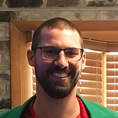
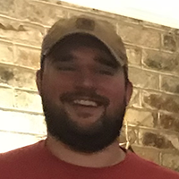
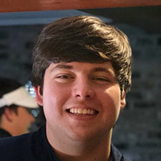
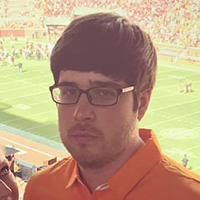

Dylan Applegate
2018, 2019
“The key is not the will to win… everybody has that. It is the will to prepare to win that is important.”- Bobby Knight
Dylan Applegate has learned the hard way that success is not guaranteed in this world, no matter how much natural talent one has. And make no mistake, on sheer talent alone, Dylan is considered a favorite in all Speegle National events, including the Wii Golf Masters. However, the field should be worried this year because Dylan has committed the offseason to unlocking his full potential. A combination of meditation, practice and training has Dylan back for his second Wii Golf Masters ready to show that he is deserving of the high praise and recognition bestowed upon him in the past.

Chris Hicks
2018, 2019
Winston Churchill once said, “Success is not final, failure is not fatal: it is the courage to continue that counts.” Since being born in 1993, Chris Hicks has responded to both success and failure in the same way: relentless determination. After 25 years on this Earth, Chris may have met his most difficult challenge left: helping both lead in the vision of the Wii Golf Masters and competing for the majestic green jacket. His final round collapse last year has led to an offseason of personal, professional and spirtitual growth that brings Chris back to Speegle National with a focused determination.

Dale Holstein
2018 🏆, 2019
Dale Holstein is a man with a simple mission statement: “What I do, I do better than you.” While tales of Dale have been slowly spreading all over North Carolina and West Virginia, he brought his talents to Savannah, Georgia, last April for the inaugural Wii Golf Masters. While he came into the final round with a slight lead, his persistance, consistency and mental fortitude overcame and overwhelmed the other world-class athletes to come away with the first green jacket. Dale returns this year to ensure that he continues his reign as THE Wii Master Champion.
Eric Speegle
2018, 2019
“I tell the kids, somebody’s gotta win, somebody’s gotta lose. Just don’t fight about it. Just try to get better.” Yogi Berra
The elder statesman of the Wii Golf Masters field, don’t let Eric’s age make you underestimate his abilities. While he shares the desire to become the oldest Wii Golf Masters champion, Eric has the unique burden of shouldering the knowledge that most athletes in the field look up to him. His son, Wills, is the CEO and founder of Speegle National Golf Club and a fellow athlete. But don’t for a second believe that Eric is planning on taking it lightly on his son or the other athletes. While he may already be a role model to thousands, he’s ready to show that Wii Golf is not just a young man’s game.

Wills Speegle
2018 🥉, 2019
Cardi B- “Remain humble but stay hungry.
Wills Speegle has been called many things in his life: an inspirational leader, a brilliant mind, and a generous friend. However, a stranger summed Wills up perfectly after only knowing him for a couple of hours… Natural. Athlete. Many saw Wills as mainly the brains behind the entire Speegle National organization. However, after spending countless sleepless nights making sure every detail was perfect, he still came out and finished 3rd in a field of great athletes. Wills is hungrier than ever to keep the green jacket at home at Speegle National this year.

AJ tovar
2018 🥈, 2019
Lil Wayne - "I’m an addict, I’m addicted to success. Thankfully, there’s no rehab for success."
AJ Tovar came out of nowhere last year to finish as a solid runner-up to the eventual champion. AJ returns for his second Wii Golf Masters with a clear head and an insatiable desire to show that last year is only the beginning. In recent months, rumors have been floating that AJ has begun a stringent training regimen that are adding both flexibility and strengh to an already elite Wii athlete. He is committed to showing the world that he is ready to become a Wii Masters champion.

Nick Wallace
2018, 2019
Drew Brees- "There’s a motivator much more powerful than doubt. I play in honor of those who believe in me.”
Don’t let Nick Wallace’s friendly demeanor fool you; he is a relentless competitor who enjoys winning more than almost anything. Nick Wallace finished last year disappointed but Nick cannot and will not be held down for long. He is the Vegas dark horse pick to win it all this year and you won’t find many athletes around the game who disagree with that. Nick has the utmost respect and admiration of every athlete with whom he competes. His passion for the game and for winning make him a fan favorite and he has the overall talent level capable of pulling off his first Wii Golf Masters victory.

Jack Williams
2018, 2019
Jack Williams is simply put, a national treasure. He was the youngest player in the field by almost a full 5 years year, not even yet 21 years of age. Jack comes back to the second Wii Golf Masters with another year of experience and wisdom under his belt. Jack has used his youth to his advantage since his initial overture into Wii golf, training for hours a day to prepare and he is ready to make the most of his second chance. Jack’s combination of competitive drive, unwavering confidence and bloodlines (his older brother Chris will also be competing this year) has him ready to show the older athletes that the next generation of players is ready to take the mantle. Walt Disney once said “The way to get started is to quit talking and begin doing” and Jack is ready to do whatever is necessary to bring home the green jacket.

Brian Yardman
2018, 2019
Brian “Baby G” Yardman has been a superstar since he was born. From hitting dingers on the baseball field to draining threes on the hardwood, he is always looking for his next athletic feat. The Wii Golf Masters has become his newest pursuit towards greatness. Brian has taken some time off from his busy career as a highly esteemed pharmacist to begin getting his mind right for the upcoming festivities. In recent interviews, Brian has been repeating one simple phrase consistently, words he learned from his most influential role model: “If you ain’t first, you’re last."

Jason Zichettella
2019
Bio here

Joey Zichettella
2019
Joey Zichettella is the other half of the rookie brother combination coming to the Wii Golf Masters this year. Known for his huge confidence and relentless preparation, Joey was asked how he felt about being the new guy in a field of seasoned, talented veterans: “I want to go down as one of the very best, plain and simple.” Joey starts his campaign for eternal glory this year at the Wii Golf Masters. If his confidence reflects his skill level, the rest of the field should take this newcomer very seriously.